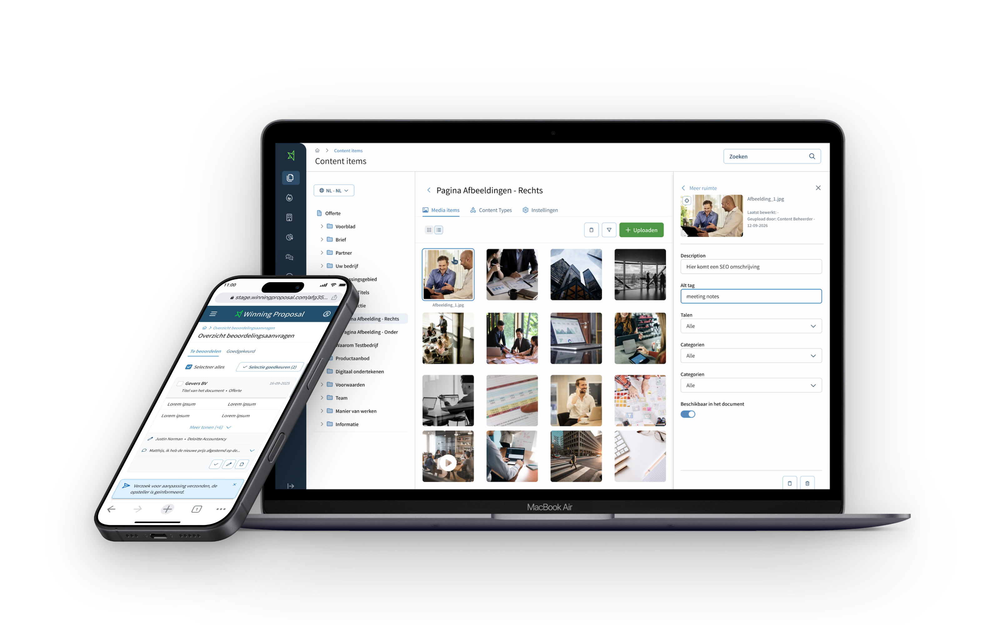
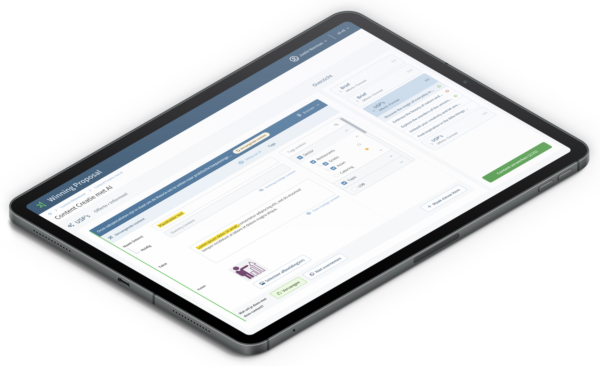

Winning Proposal B2B SaaSLead UX Designersinds medio 2024
Een AI-ondersteund B2B-offerteplatform waarmee salesteams sneller sterke voorstellen maken
Als vaste lead UX-designer werk ik sinds medio 2024 aan de doorontwikkeling van Winning Proposal. Ik onderzoek uiteenlopende vraagstukken, vertaal ze naar heldere productkeuzes en breng ze samen met het team van idee naar gevalideerde release.
- RolLead UX Designer
- SindsMedio 2024, doorlopend
- Team2 product owners, 12 developers, 4 designers
- FocusVan onderzoek tot livegang

De opdracht
Dit is geen afgebakend project, maar een doorlopende samenwerking binnen een product dat steeds verder ontwikkelt. Per vraagstuk werk ik samen met product owners, development en het implementatieteam dat klanten live brengt. Mijn rol is om de gebruikersvraag scherp te krijgen en die te vertalen naar een uitvoerbare, gevalideerde oplossing.
Het terugkerende probleem
De features verschilden, maar vroegen steeds om dezelfde balans: salesteams willen sneller en met meer zekerheid voorstellen maken, zonder dat complexiteit in content, processen of data hen in de weg zit. De UX-opgave was om die complexiteit terug te brengen tot heldere stappen en keuzes die aansluiten op hun dagelijkse werk.
Mijn aanpak
Voor elk vraagstuk begin ik bij de vraag achter de vraag. Ik combineer interviews met gebruikers, sales en stakeholders met benchmarkonderzoek, prototyping en validatie. Inmiddels heb ik ruim vijftig onderzoekssessies uitgevoerd. Zo maak ik keuzes expliciet voordat ze in development worden gebouwd en houd ik de lijn tussen gebruikersbehoefte, productdoel en technische realisatie scherp.
De vraagstukken lopen uiteen: van content en media beheren tot goedkeurings- en vervolgdocumentflows, dashboards voor inzicht en statistieken en AI-ondersteunde contentcreatie. De rode draad is steeds hetzelfde: complexe productlogica begrijpelijk en bruikbaar maken voor de gebruiker. Om die samenhang te bewaken heb ik een design system opgezet dat ik doorlopend onderhoud, zodat elke nieuwe feature visueel en functioneel aansluit op de rest van het platform.
Een voorbeeld daarvan is de AI-contentcreatiemodule. Gebruikers uploaden bestaande documenten, waarna AI daar herbruikbare offertecontent uit genereert. Ik ontwierp de interactie zo dat gebruikers de AI-suggesties stap voor stap kunnen beoordelen, verfijnen en toevoegen aan hun voorstel. Omdat content in Winning Proposal gelaagd is opgebouwd, van document tot kop en tekstblok, koos ik op basis van benchmarkonderzoek voor een uitvouwbaar patroon dat overzicht en controle geeft.

Het resultaat
De ontworpen features staan live en vormen samen de verdere ontwikkeling van Winning Proposal: van content en workflows tot dashboards en AI-ondersteuning. Sinds medio 2024 ben ik de vaste UX-designer voor nieuwe vraagstukken binnen het platform, van eerste onderzoek tot gevalideerde release.
Wat dit laat zien
Doorlopende UX-verantwoordelijkheid binnen een bestaand B2B-product: uiteenlopende vraagstukken onderzoeken, complexe flows terugbrengen tot heldere interacties en samenwerken met product owners en development om oplossingen ook daadwerkelijk live te brengen.